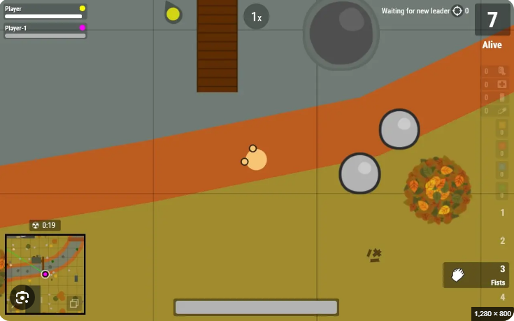

Acerca del Juego
Survev.io (anteriormente conocido como Surviv.io) es un popular videojuego de disparos táctico multijugador masivo en línea del género battle royale, inspirado en títulos como PUBG. Los jugadores caen en un mapa generado aleatoriamente donde deben buscar armas, suministros, armaduras y munición mientras evitan el gas tóxico que reduce el área de juego segura.
Sobrevive combatiendo contra otros jugadores en intensas partidas rápidas donde la estrategia, la puntería y la gestión del inventario son clave para convertirte en el último jugador en pie.